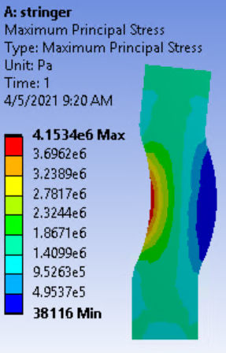
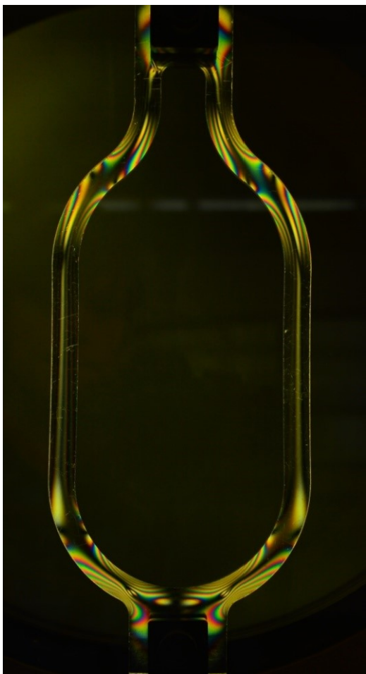
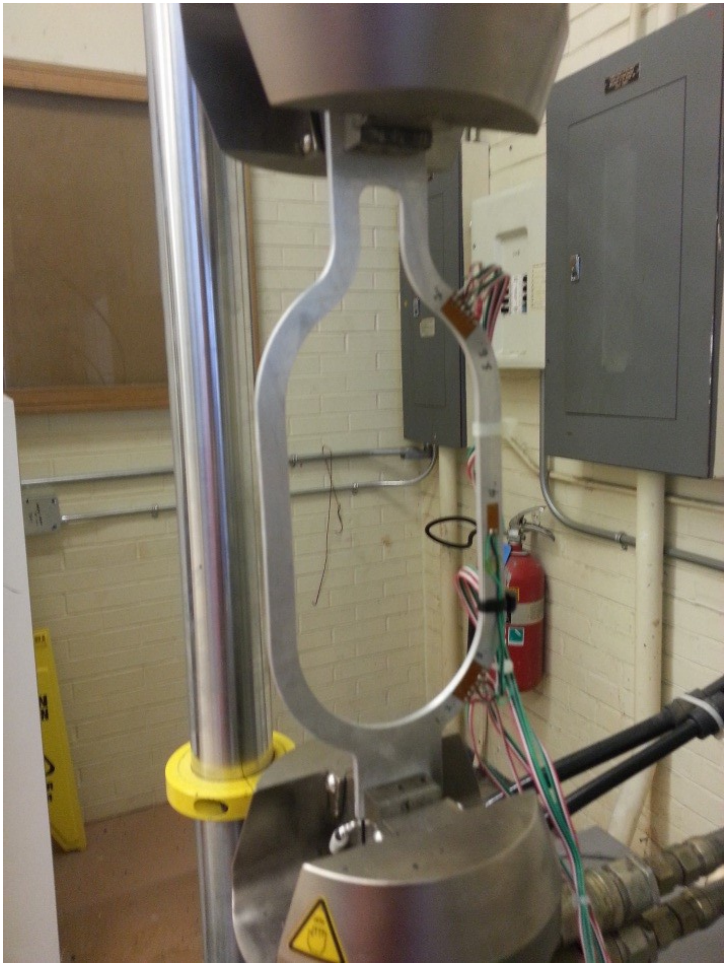

← Back to Projects
Strain Mapping — FEA · Photoelasticity · Strain Gauges
2021 · Experimental Stress Analysis · Lab Project
Specimen Prep
Gauge Bonding
Photoelasticity
ANSYS FEA
Correlation
Report & Drawings
Gallery



Overview
- Compared an aircraft-style stringer specimen using FEA, photoelasticity, and bonded strain gauges.
- Objective: correlate stress/strain fields across methods and explain deviations via mechanics-based reasoning.
- Deliverables: specimen drawing, gauge layout, photoelastic fringe interpretation, FEA model, and correlation report.
Experimental Methods
- Specimen prep: deburr, surface clean/neutralize; mark neutral axis and gauge centerlines.
- Strain gauges: uniaxial on inner/outer surfaces + one 45° rosette at mid-span; quarter/half-bridge wiring, shunt-cal, zero drift check.
- Photoelasticity: incremental tensile loading; captured isochromatic fringe orders and converted to principal stress via material stress–optic coefficient.
- Test protocol: load steps with dwell to stabilize readings; documented load–strain curves and fringe maps.
FEA Modeling
- Built 3D ANSYS model; applied measured material properties from tensile coupons; mesh convergence study.
- Boundary conditions replicated grip constraints; load stepped to match lab protocol.
- Extracted stress at gauge center nodes; exported field data for direct comparison.
- Evaluated von Mises and principal stresses along inner/outer radii and web region.
Correlation & Results
- Peak stress on the concave (inner radius) side; photoelastic fringes and FEA maxima co-located at fillet region.
- Rosette-derived principal stresses matched FEA best at mid-span; uniaxial gauges diverged more in low-gradient regions.
- Error sources: gauge alignment ±0.5 mm, adhesive creep, transverse sensitivity, fringe order interpretation.
- Produced FE–test comparison plots and a short memo highlighting fillet radius/thickness as redesign levers.
Representative images for illustration; raw data and detailed calculations available on request.